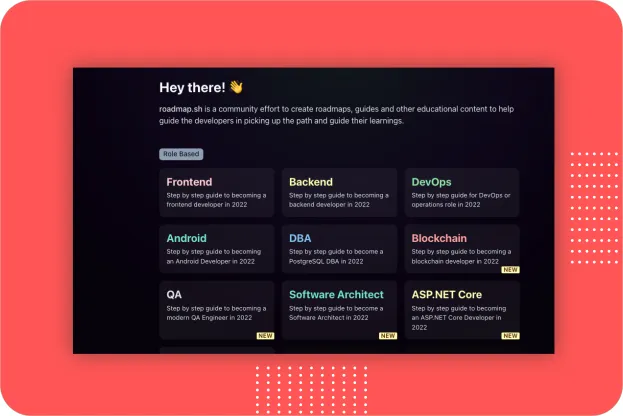
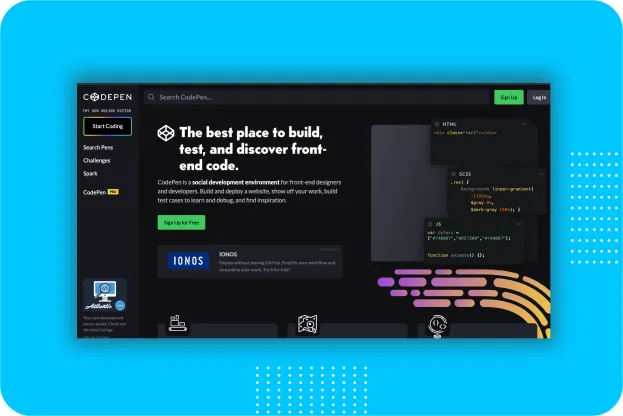
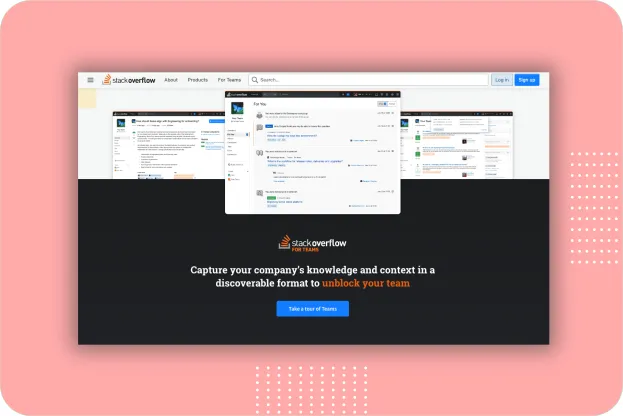
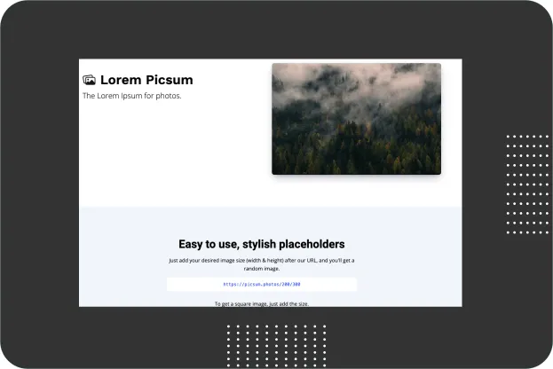

Websites are now an essential tool for every business. And if you are a web developer and need to find new material or resources, then this is the place for you. As a developer, it is not easy to find a website that can provide all the resources and information that you need. This article will take you through 12 websites that you’ll love as a developer.
Ray.so
Turn your code into beautiful images using this site. You can choose from a range of syntax colors, hide or show the background, and toggle between a dark and light window. If you are a developer you can easily create beautiful screenshots of source code through this app and share on various social apps such as instagram, twitter and facebook.
 Ray.so
Ray.so
Roadmap.sh
Roadmap.sh is a community effort to create roadmaps, guides and other educational content to help guide the developers in picking up the path and guide their learnings. It contains community curated roadmaps, study plans, paths and resources for developers newly entered into this space. It started as a set of charts toset of charts to guide the developerswho are confused about what should learn next.
 roadmap.shCodepen.io
CodePen is a social development environment. It allows you to write code in the browser, and see the results of it as you build. You can build and deploy websites, show off your work, build test cases to learn and debug, and find inspiration. You can also browse and share work from other designers and developers in the front-end community.
Codepen Pro having Pair Program feature where you can use Collab Mode which allows more than one person to edit a Pen at the same time. This is real-time pair programming at its best, since the two (or more) people can be anywhere in the world and it’s not nearly as bandwidth-intensive as video.
 codepen.ioStack Overflow
It is the most common website all most all developers using in everyday work. Stack Overflow is a question-and-answer site for computer programming questions, especially those related to specific programming languages. It also offers professional development opportunities to its members through online courses, certificates, and job listings. Stack Overflow is a public Q&A platform that over 100 million people visit every month to ask questions, learn, and share technical knowledge.
 stackoverflow.comGithub
GitHub is a website that hosts Git repositories and provides social networking-like features for programmers to share their projects. Github is the complete developer platform to build, scale, and deliver secure software.
GitHub is where over 94 million developers shape the future of software, together. It Supercharge your development process. Github provides unlimited repositories, best-in-class version control, and the world’s most powerful open source community-so your team can work more efficiently together.
 github.com
github.com
Iconstore.co
IconStore is a library of free, vector (SVG) icons created by talented designers to download for commercial use.
All the icons published on the IconStore are made to be used freely.
Permissions:
- ✔ You can use the icons in personal and commercial projects
- ✔ You can modify the icons
- ✔ No attribution required (although it’s appreciated!)
Readme.so
Use markdown editor and templates to easily create a ReadMe for your next projects. Easy way to create a README file using simple editor provided by the application. It allows you to quickly add and customize all the sections you need for your project’s readme.
 readme.so
readme.so
Lorem Picsum
Lorem Picsum provides random or specific uploaded images as placeholders. Here you can view all the images Lorem Picsum provides. Developers need to specify a desired image size (width & height) at the end of the request URL.
 picsum.photosGitBook
GitBook is a modern documentation platform where teams can document everything from products to internal knowledge bases and APIs. It makes it easy to research, plan and document products, from start to ship.
 gitbook.com
gitbook.com
Figma
Figmais a collaborative web application for interface design, with additional offline features enabled by desktop applications for macOS and Windows. Build an iterative design flow with live collaboration that keeps you in the loop whether you’re working in the office or remotely. This has enabled our product teams to ship new products faster and feel more confident in their decisions.
 figma.com
figma.com
LottieFiles
Lottie is a JSON-based animation file format that enables designers to ship animations on any platform as easily as shipping static assets. They are small files that work on any device and can scale up or down without pixelation. LottieFiles lets you create, edit, test, collaborate and ship a Lottie in the easiest way possible. LottieFiles takes away the complexity from Motion Design.
 lottiefiles.com
lottiefiles.com
Dribbble
Millions of designers and agencies around the world showcase their portfolio work on Dribbble. Dribbbleis the world’s leading destination for designers to learn, share, grow, and get hired. Dribbble market place brings you creative projects to life starting from fonts, graphics, themes, photos, and templates designed, mockups and 3D models created by independent creators around the world.
 dribbble.com
dribbble.com
There you have it. Thanks for checking this out and do not forget to try these tools.